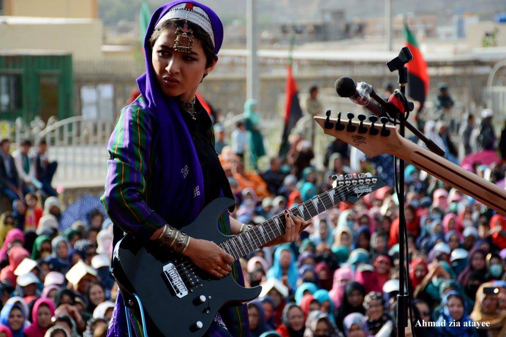
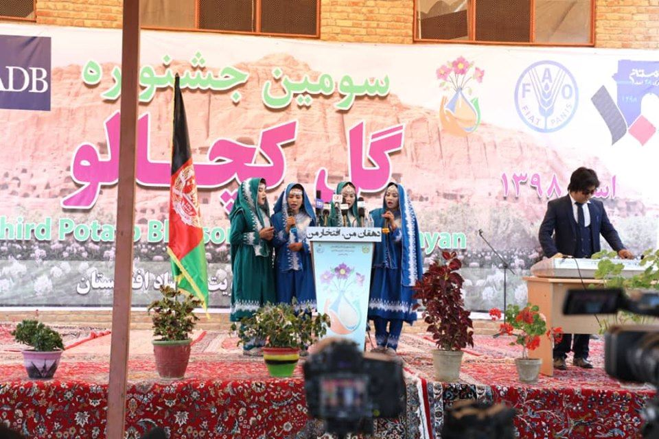
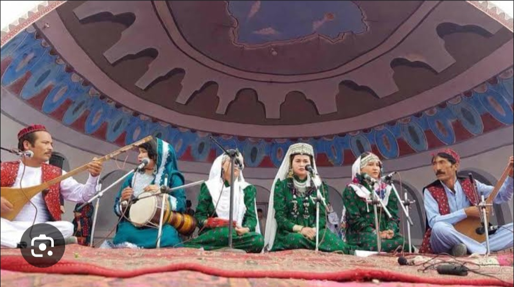

Bamiyan City
Bamiyan is one of Afghanistan's most culturally rich provinces,known for its historical heritage and peacful traditions.It was once home to the giant of Buddihist art and ancient civilization.Today ,Bamyan celebrates its culture through events like the Bamyan Silk Road Festival,Where locals and visitors gather to enjoy traditional music, dance ,handicrafts,and local food.These cultural gatherings highligh the rigion's commitment to preserving its art, history,and peacful identity.

Silk Road Festival
The Silk Road Festival in Bmaiyan highlighs the province's historical signifigcance as part of the ancient Silk Road trade route.The festival includes cultural exhibition,traditional music and dance performances ,and showcase local crafts and cuisine ,celebrating the diverse cultural heritage of the rigion.
Potato Flower Festival
Potato Flower Festival(Gul-e-Kachalo) Bamiyan is renowned for its potato cultivation,and the Potato Flower Festival celebrates this agriculture heritage.During the festival ,various potato-based dishes are prepared ,and cultural activities such as music and dance erformances are held.Thefestival also serves to support loacl farmers and promote agriculture products.
Dumbura Festival
The Dumbura Festivalis a significant cultureal event in Bamiyan that celebrates traditional Hazara music.The festival features performances by local musicians playing the dumbura, a traditional stringed instrument,and includes exhibition of local handicrafts and artworks.It aims to promote cultural heritage and attract tourism to the rigion.
